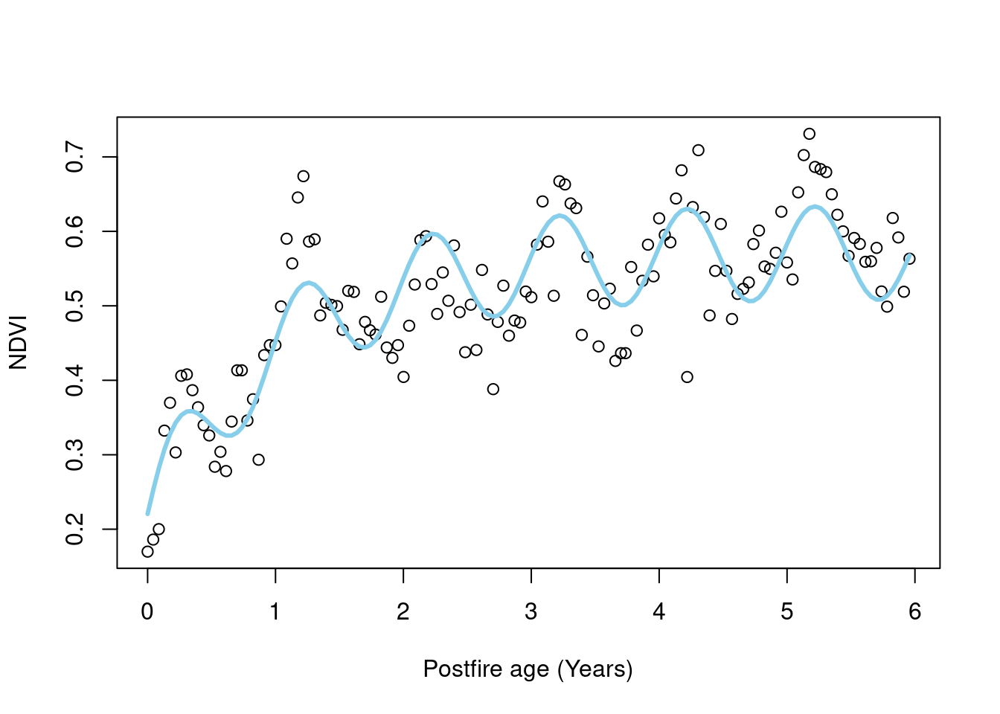
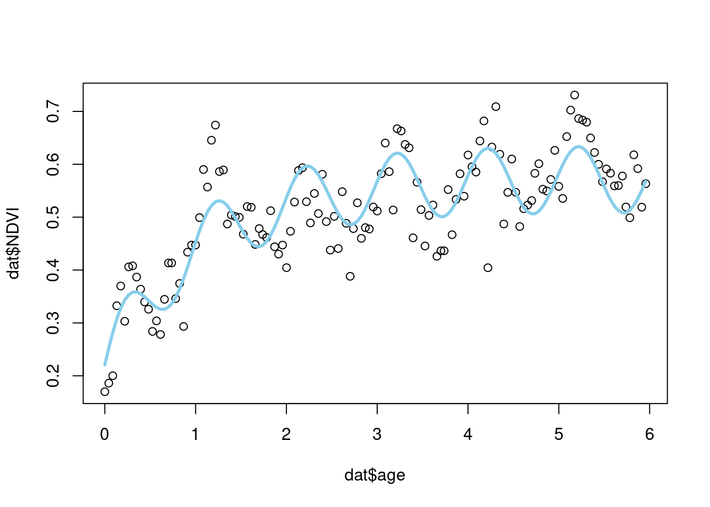
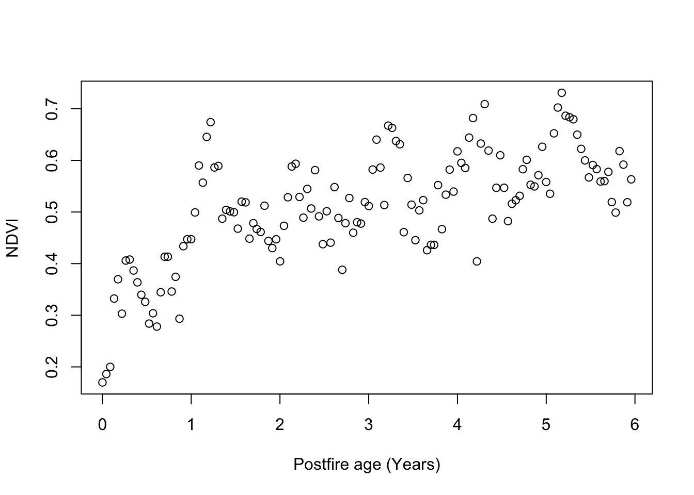

9 Latent variables and state-space models
This section is only available as a slideshow. Right click or hold Ctrl or Command and click this link to view in full screen.
9.1 Latent variables & state-space models

Iterative ecological forecasting typically requires modelling variables that vary in time and space…
State-space models are a general statistical framework that is particularly well-suited to this problem.
Here I provide a brief introduction to state-space models, but first I must introduce latent variables.
9.2 Latent variables
Variables are latent if they are unobserved or estimated with uncertainty.
- i.e. their true value is not known and can only be inferred indirectly through a model from other variables that can be observed and measured.
Dietze 2017 outlines 4 common latent variable types:
- observation errors (random and systematic)
- proxy data
- missing data
- unobserved variables
9.2.1 Observation error
I’ve already mentioned that a big challenge to modelling is error in the observation of the state variable of interest.
Observation errors are typically either:
random, due to imprecision of the data collection process or other extraneous factors, or
systematic, implying there is some bias
Precision vs accuracy
Figure 9.1: The true value is the origin (0,0).
Imprecision in measurement creates random error.
Inaccuracy creates systematic error.
9.2.1.1 Random observation error
Random error is created by imprecision in measurement (“scatter”) around the true state of the variable of interest, but can be created by other processes.
In this case we may want to model the true state as a latent variable, and model the random observation error as a probability distribution (typically Gaussian) around the mean.
E.g. specifying the data model to be a normal distribution around the mean (\(\mu\)), as we did in the post-fire recovery model:
\(NDVI_{i,t}\sim \mathit{N}(\mu_{i,t},\frac{1}{\sqrt{\tau}}) \\\)
In this case \(\mu\) is the latent variable (i.e. estimate of the unobserved true state).
9.2.1.2 Systematic observation error
Systematic error is where there is a bias, such as created by differences among observers or poor instrument calibration.
Constant bias can be corrected with an offset, but something like sensor drift may need to be approximated as a random walk or similar (to account for temporal autocorrelation).
If we have more information about the causes of error, we can apply more complex observation models (e.g. differences among field staff, temperature dependence of readings, etc).
Often there is both random and systematic error, requiring a model that accounts for both.
9.2.2 Proxy data
I.e. observing a proxy for the state variable of interest, e.g.
- Normalised Difference Vegetation Index (NDVI) for plant cover or vegetation health
- Time-domain reflectometry (TDR) for soil moisture
- Dung as a measure of herbivore habitat preference
There are many ways to relate the observed proxy(ies) to the latent state variable of interest, such as empirical calibration curves, probabilities of identifying dung correctly, etc.
9.2.3 Missing data
Where some observations may be missing from the data, these may be estimated with uncertainty in various ways.
Missing data are common in time series or in space (e.g. sensor failure, logistical difficulties, etc.).
9.2.4 Unobserved variables
Some variables may never be observed (e.g too difficult to measure), but can be inferred from the process model, e.g.
- soil stored seedbanks in plant demographic models
- determinants of resource allocation decisions in organisms
Estimating these latent variables can be tricky, but having multiple independent measures to constrain the estimates or high confidence in the model structure (i.e. mechanistic understanding) can help.
9.3 State-space models
Forecasting involves predicting key variables further in time, and often farther in space.
An issue with time-series or spatial modelling is dependence (“autocorrelation”) among observations in time and space.
One also usually has to deal with a number of latent variables due to missing or sparse data, observation error, etc.
State-space models are a useful framework for dealing with these kinds of problems and for forecasting in general.
- The name comes from the focus on estimating the state as a latent variable.
- This explicitly separates observation errors from process errors, allowing attractive flexibility, including addressing issues of autocorrelation…
9.4 State-space models - illustration

The dependence among the true (latent) states \(z_{t-1}\), \(z_t\), \(z_{t+1}\), … can be modeled explicitly in the process model. The dependence of the observations \(y_t\) on the states \(z_t\) allows observations to be assumed to be independent.
State estimates can be closer to the true states than the observations.
9.4.1 State-space models - simple example
Here’s an SSM where the process model is a random walk (i.e. change at each time step is just process error (\(\tau_{add}\)) - a random draw from a normal distribution). We’ve also specified a data model with observation error drawn from a normal distribution.
The process model[^1]: \[z_{t+1}\sim\mathit{N}(z_{t},\tau_{add})\]
The data model: \[y_{t}\sim\mathit{N}(z_{t},\tau_{obs})\]
Note 1: The process and data model can also be referred to as the state and observation models respectively.
Note 2: For a Bayesian model this would also require priors on the process error (\(\tau_{add}\)), observation error (\(\tau_{obs}\)) and initial condition of the state variable (\(x_0\)).
The probability distribution for the state variable, \(z_{t}\), conditional on the model parameters would be:
\[ \underbrace{z_{t}|...}_\text{current state} \; \propto \; \underbrace{{\mathit{N}(z_{t}|z_{t-1},\tau_{add})}}_\text{previous time} \; \underbrace{{\mathit{N}(y_{t}|z_{t},\tau_{obs})}}_\text{current observation} \; \underbrace{{\mathit{N}(z_{t+1}|z_{t},\tau_{add})}}_\text{next time} \; \]
Which says that the current state (\(z_{t}\)) depends on both the states before and after as well as the current observation (\(y_{t}\)).
In fact, the posterior of the current state (\(z_{t}\)) is proportional to the product of the three normal distributions.
Where the terms are similar, the state estimate peaks, indicating less uncertainty.

Where the terms differ, the state estimate flattens, indicating greater uncertainty.
Often, there’s no observation for “next time”, and the model reduces to:
\[ \underbrace{z_{t}|...}_\text{current state} \; \propto \; \underbrace{{\mathit{N}(z_{t}|z_{t-1},\tau_{add})}}_\text{previous time} \; \underbrace{{\mathit{N}(y_{t}|z_{t},\tau_{obs})}}_\text{current observation} \; \]

For forecasts, there’s no “current observation” either, so we get:
\[ \underbrace{z_{t}|...}_\text{forecast state} \; \propto \; \underbrace{{\mathit{N}(z_{t}|z_{t-1},\tau_{add})}}_\text{previous time} \; \]

In this dummy model the forecast value is almost exactly the same as the previous time, because the process model is a random walk and simply adds a little error (\(\tau_{add}\)) to the previous state (\(z_{t-1}\)).
9.5 State-space models - postfire example
Our postfire recovery example could use a state update equation with process model:
\[x_{i,t} = \underbrace{(x_{i,t-1} + x_{i,t-1}\lambda_i(1-\frac{x_{i,t-1}}{\gamma_i})) (1-z_{i,t-1})}_\text{negative exponential*} + \underbrace{z_{i,t-1}\alpha_i}_\text{postfire greeness*} + \underbrace{A_i\sin(v_t+\phi_i)}_\text{seasonality} + \epsilon_{i,t}\] and data model (as before):
\[NDVI_{i,t} \sim \mathit{N}(x_{i,t},\sigma_o^{2})\]
\(x_{i,t}\) is the hidden state for site \(i\) at time \(t\)
\(z_{i,t}\) is the observed occurrence of fire (0/1)
The process model (“previous time” only) represents negative exponential growth, seasonality and a fire switch that tells the model to follow the exponential when fires do not occur (\(z_{i,t} = 0\)) or resets the state to postfire greenness (\(\alpha\)) when they do (\(z_{i,t} = 1\)).

from Slingsby et al. 2023
9.6 State-space model uses
They can be used for almost anything where the future state of a system depends on the current state, including:
- population dynamics
- fisheries stock assessment
- movement ecology (biologging)
- capture-recapture
- epidemiology and disease ecology
- weather
- carbon cycle
- etc, etc
For time-series of discrete states variables (i.e. categorical response) they are also referred to as Hidden Markov models
- “hidden” refers to the latent variable(s)
- “Markov” refers to their recursive nature, with the next state in time a function of the current state
When extended to spatial or space-time models they are called Markov random fields
9.7 References
Auger-Méthé, Marie, Ken Newman, Diana Cole, Fanny Empacher, Rowenna Gryba, Aaron A. King, Vianey Leos-Barajas, et al. 2021. “A Guide to State–space Modeling of Ecological Time Series.” Ecological Monographs 91 (4): e01470. https://doi.org/10.1002/ecm.1470.
Dietze, Michael C. 2017. Ecological Forecasting. Princeton University Press. https://doi.org/10.2307/j.ctvc7796h. - especially Ch 8 Latent Variables and State-Space Models
Slingsby, Jasper A., Adam M. Wilson, Brian Maitner, and Glenn R. Moncrieff. 2023. “Regional Ecological Forecasting across Scales: A Manifesto for a Biodiversity Hotspot.” Methods in Ecology and Evolution / British Ecological Society, January. https://doi.org/10.1111/2041-210x.14046.